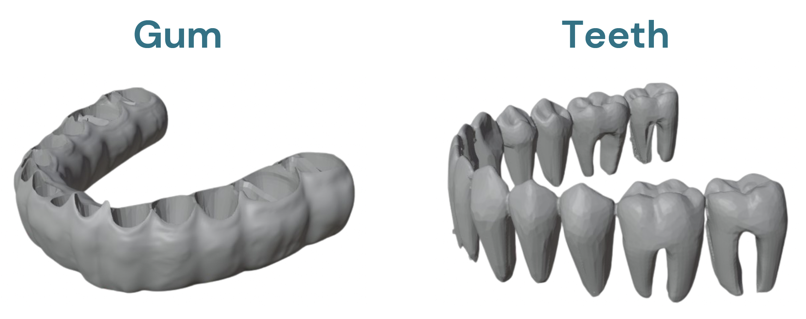
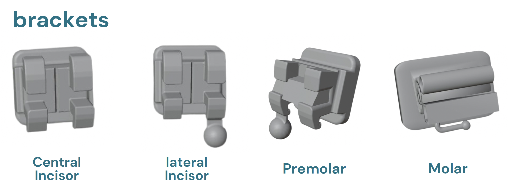
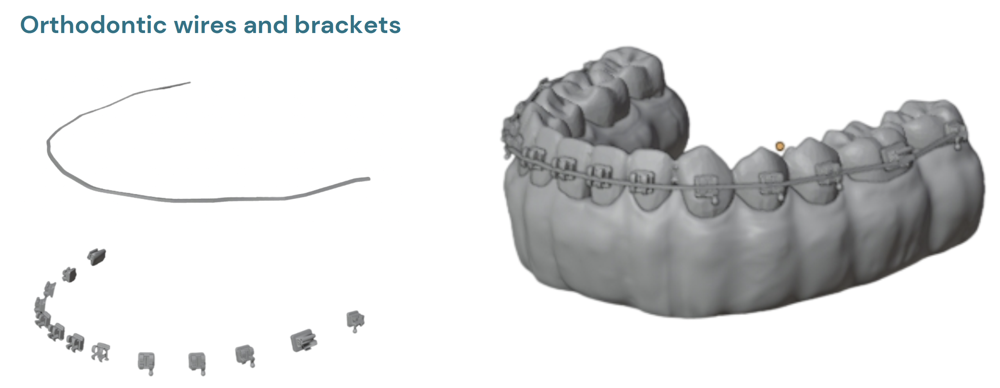
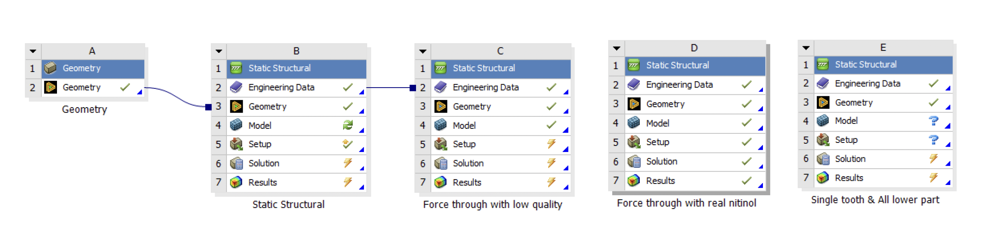
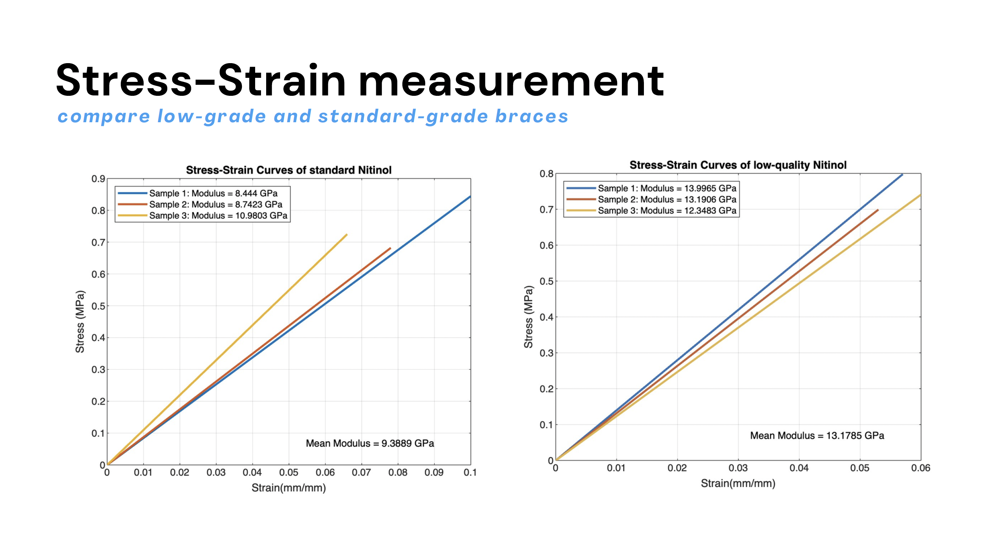
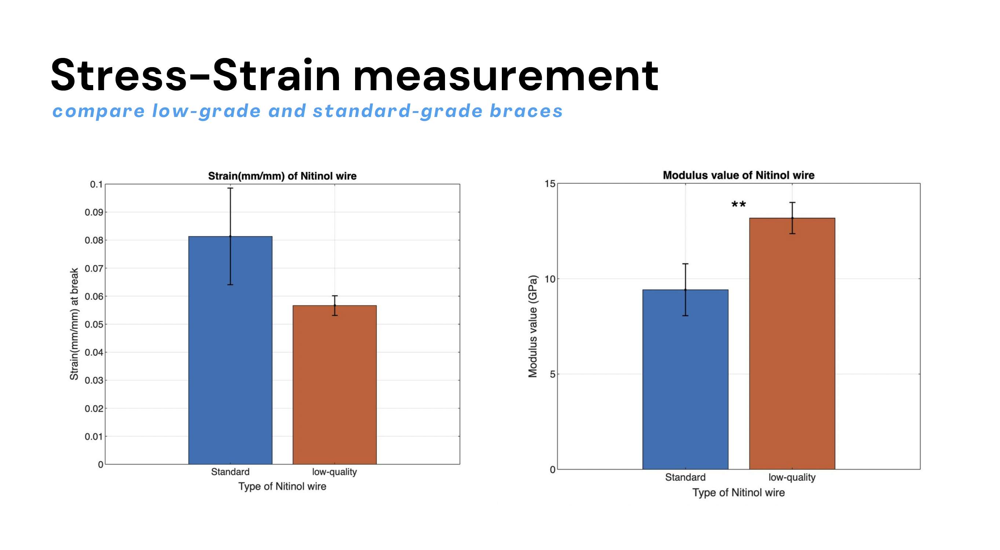
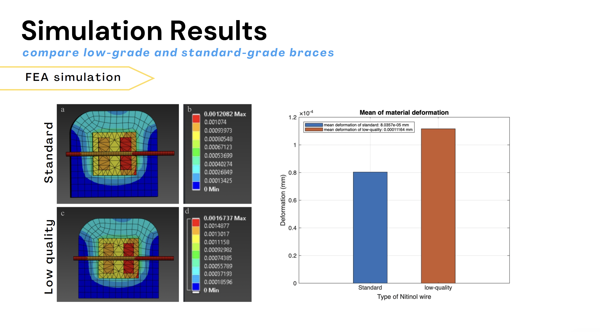
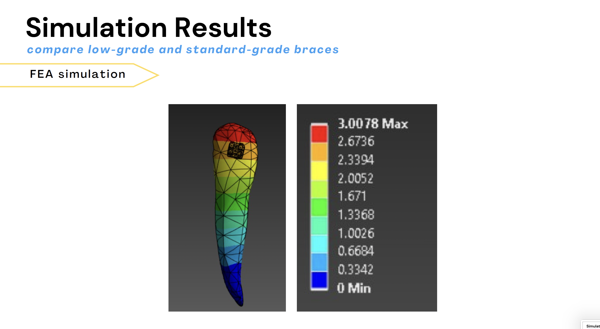

Biomechanics Simulation of Orthodontic Force: Standard vs. Low-Quality Wire
Problem
Orthodontic treatment relies heavily on wire quality to achieve predictable tooth movement and patient safety. However, low-quality orthodontic wires are prevalent in markets, especially in regions with limited regulation. The critical issue is that the biomechanical properties of low-quality wires differ significantly from standard-quality wires, leading to:
- Unpredictable force delivery: Low-quality wires produce inconsistent stress distributions, compromising treatment outcomes
- Material degradation: Poor-quality wires show greater susceptibility to force decay over time
- Patient safety risks: Substandard materials may release harmful heavy metals and lack protective oxide coatings
- Clinical complications: Insufficient force control and material risks, including poisoning or adverse reactions
- Hygiene concerns: Low-quality wires lack proper surface protection, promoting bacterial adhesion
Objective
To compare the material properties and biomechanical performance between low-grade and standard-grade orthodontic wires using both experimental testing and finite element analysis.
Specific goals included:
- Conduct tensile testing on standard and low-quality nitinol wires to measure stress-strain characteristics
- Quantify differences in modulus values, stiffness, and elasticity between wire types
- Perform FEA simulations to model stress distributions in dental structures under orthodontic force
- Compare force transmission patterns and tooth displacement between wire types
- Provide evidence-based clinical recommendations for wire selection
Methods
1. Experimental Testing (Material Characterization)
- Obtained samples of standard-quality nitinol wire and low-quality orthodontic wire (fashion-grade)
- Performed tensile testing on three samples of each wire type
- Measured stress-strain relationships and calculated Young's modulus for each sample
- Analyzed results statistically to determine significant differences
2. Finite Element Analysis (FEA) Simulation
- Geometry Creation: Built detailed 3D CAD models of maxillary dental arch including teeth, gum, and periodontal ligament
- Material Properties: Defined material parameters based on experimental test data for both wire types
-
Model Compartments: Segmented the model into:
- Individual tooth brackets (Central Incisor, Lateral Incisor, Premolar, Molar)
- Gum tissue and bone structures
- Orthodontic wires and brackets

Figure 1: Value Proposition Diagram

Figure 1: Value Proposition Diagram

Figure 1: Value Proposition Diagram
- FEA Setup in Ansys Workbench:

Figure 1: Value Proposition Diagram
- Defined boundary conditions (fixed supports at bone anchors)
- Applied horizontal forces to simulate wire-induced tooth movement
- Configured mesh with appropriate refinement for accurate stress distribution
- Simulation Scenarios: Ran multiple analyses comparing force transmission and material deformation between standard and low-quality wires
- Results Analysis: Extracted stress, strain, and displacement data; generated color-coded visualizations showing stress hotspots
3. Tools & Technologies
- Ansys Workbench 2024 (FEA software)
- CAD modeling software for geometry creation
Results
Experimental Findings (Stress-Strain Testing)

Figure 1: Value Proposition Diagram

Figure 1: Value Proposition Diagram
- Standard Wire: Mean Young's modulus = 9.3889 GPa with consistent properties across samples
- Low-Quality Wire: Mean Young's modulus = 13.1785 GPa, showing significantly higher stiffness but greater variability
- Strain at Break: Standard wire exhibited greater elasticity (0.08 mm/mm) compared to low-quality wire (0.056 mm/mm), indicating less flexibility
- Key Finding: Low-quality wires are stiffer and more brittle, lacking the controlled deflection behavior needed for safe tooth movement
FEA Simulation Results

Figure 1: Value Proposition Diagram

Figure 1: Value Proposition Diagram
- Force Distribution: Standard wires demonstrated uniform stress distribution across the dental arch; low-quality wires showed concentrated stress hotspots
- Material Deformation:
- Standard wire: Mean deformation = 0.03576 mm
- Low-quality wire: Mean deformation = 0.0011164 mm (significantly lower, indicating rigid behavior)
- Stress Concentration: Low-quality wires exhibited stress concentration factors up to 3x higher than standard wires, creating risk zones in tooth structures
- Biological Implications: Uneven force distribution can lead to:
- Insufficient control of tooth movement
- Increased risk of root resorption
- Potential for tissue damage in high-stress areas
What I Learned
Technical & Professional Growth
This project was my first real introduction to professional engineering tools. Learning CAD modeling and FEA through Ansys Workbench showed me how to translate real-world problems into computational form. But more importantly, I learned that technical tools are only powerful when connected to solving actual problems. I discovered how to bridge engineering outcomes with real-world impact—using simulation data and experimental evidence to justify decisions and support clinical recommendations. This project taught me why material testing isn't just an academic exercise; it's the foundation for confident, evidence-based engineering.
Understanding Quality & Evidence
Through this comparison of standard and low-quality wires, I truly grasped why quality matters. It's not about cost or preference—it's about measurable, quantifiable differences in performance and safety. I learned that material quality directly impacts outcomes, and that rigorous testing provides the evidence needed to defend that difference. This shift from seeing quality as "nice to have" to understanding it as essential is something I'll carry forward in every project.
Collaboration & Project Management
As a Year 2 semester group project, this taught me practical skills beyond engineering. Working with teammates, I learned how to divide responsibilities, coordinate different aspects of the work, and keep everyone aligned toward a deadline. I discovered how to problem-solve collaboratively—when one person hit a roadblock with CAD geometry or mesh refinement, others could troubleshoot or offer perspective. Managing a complex project with experimental testing, simulation work, and analysis across a semester showed me I can handle multi-threaded work and deliver quality results within constraints. These collaboration and time management skills are just as valuable as the technical knowledge I gained.